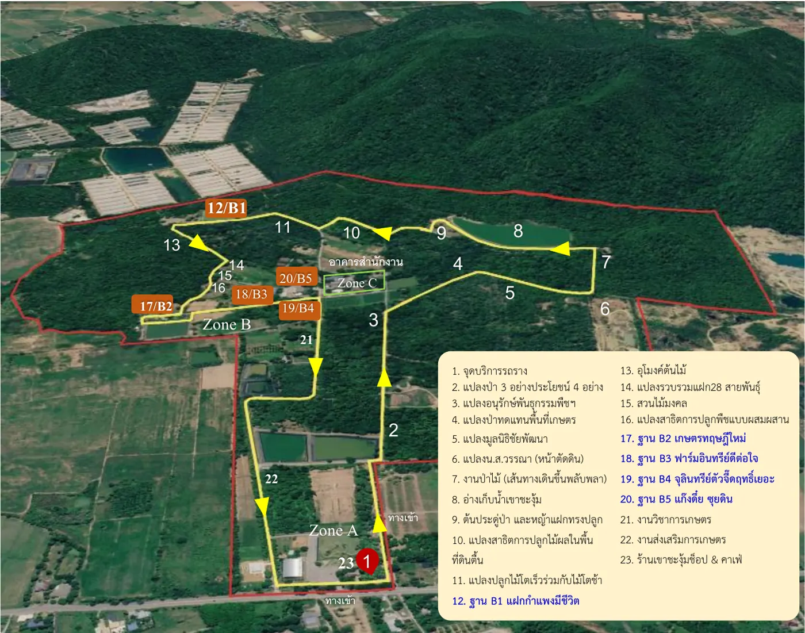
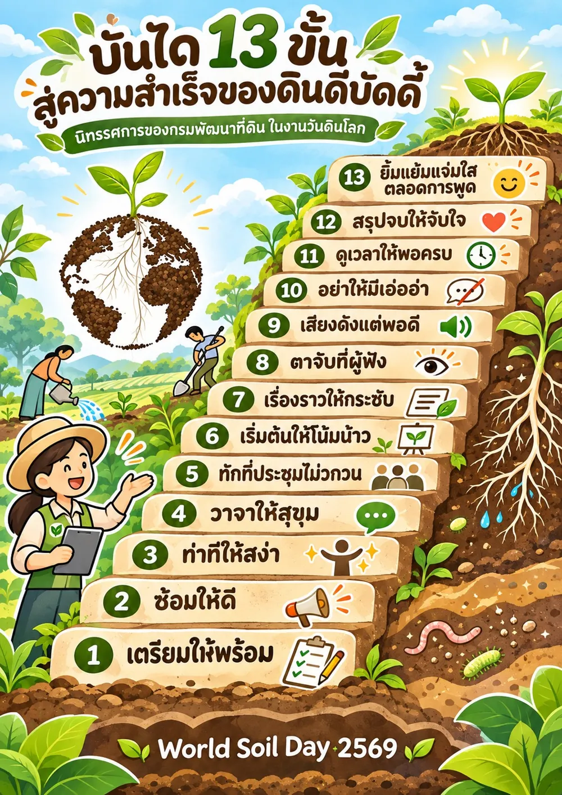
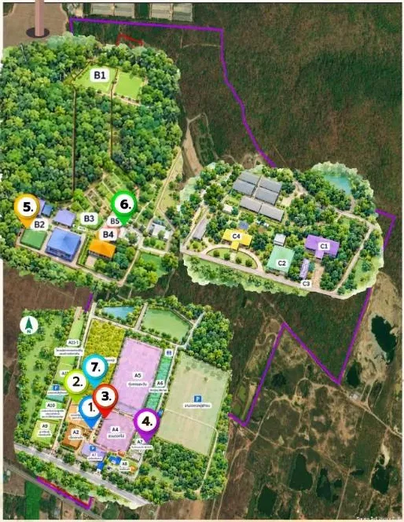

“การพัฒนาศักยภาพผู้ปฏิบัติหน้าที่เผยแพร่องค์ความรู้งานวันดินโลก ประจำปี 2569”
เตรียมความพร้อม “ดินดีบัดดี้” ในการถ่ายทอดความรู้ งานวันดินโลก ปี 2569
เครื่องมือสุ่มที่ใช้บ่อย
ลำดับการเรียนรู้
ภาพรวมและตารางเวลา
โครงการฝึกอบรมเชิงปฏิบัติการหลักสูตร “การพัฒนาศักยภาพผู้ปฏิบัติหน้าที่เผยแพร่องค์ความรู้งานวันดินโลก ประจำปี 2569” วันที่ 23 พฤศจิกายน 2569 ณ ห้องประชุม 1601 ชั้น 6 กรมพัฒนาที่ดิน รวม 7 ชั่วโมง 30 นาที
| เวลา | หัวข้อ | วิทยากร |
|---|---|---|
| 08.00–09.00 | ลงทะเบียน และพิธีเปิด | |
| 09.00–09.30 | ความหมายและความสำคัญของ “ดินดีบัดดี้” งานวันดินโลก บรรยาย | นางมาลินี คุณะดิลก จำปาทอง |
| 09.30–10.30 | ความหมายและความสำคัญของงานวันดินโลก ปี 2569 ภายใต้หัวข้อ “Tackle Soil Compaction, Boost Food Production” พลิกฟื้นดินดาน เพิ่มผลผลิตอาหาร สานชีวิตยั่งยืน บรรยาย | นางสาวประภา ธารเนตร |
| 10.30–12.00 | ช่วงที่ 1 · บทบาทหน้าที่ และสิ่งที่ “ดินดีบัดดี้” ต้องมีสำหรับการปฏิบัติงาน บรรยายและฝึกปฏิบัติ · อาหารว่างเวลา 10.30 น. | อ.ดร.วิภาดา สุทธิโรจน์ และ อ.ฉัตรดนัย ใจเสงี่ยม |
| 12.00–13.00 | พักรับประทานอาหารกลางวัน | |
| 13.00–14.30 | ช่วงที่ 2 · แบ่งกลุ่มศึกษาเส้นทาง และจัดทำแผนเดินทาง สำหรับ “ดินดีบัดดี้” บรรยายและฝึกปฏิบัติ | อ.ดร.วิภาดา สุทธิโรจน์ และ อ.ฉัตรดนัย ใจเสงี่ยม |
| 14.30–17.30 | ช่วงที่ 3 · จัดทำ Script สำหรับ “ดินดีบัดดี้” แบ่งกลุ่มทำ Script · ฝึกปฏิบัติจริง · ประเมินข้อผิดพลาดและแก้ปัญหาเฉพาะหน้า · Script ฉบับสมบูรณ์ · อาหารว่างเวลา 14.30 น. | อ.ดร.วิภาดา สุทธิโรจน์ และ อ.ฉัตรดนัย ใจเสงี่ยม |
แถวสีเขียวอ่อนคือช่วงที่มีแผนกิจกรรมและเครื่องมือบนเว็บนี้ กดชื่อหัวข้อเพื่อดูรายละเอียด
วัตถุประสงค์ของโครงการ และช่วงที่ตอบโจทย์
| วัตถุประสงค์ | ช่วงที่ตอบโจทย์ |
|---|---|
| 2.1 เสริมสร้างความรู้ ความเข้าใจ และเตรียมความพร้อมการปฏิบัติหน้าที่ “ดินดีบัดดี้” ในการถ่ายทอดความรู้ได้อย่างมีประสิทธิภาพ ในงานวันดินโลกปี 2569 | ช่วงที่ 1 และ 2 |
| 2.2 ผู้เข้ารับการอบรมสามารถเขียนแผนงาน Script การนำเสนอ และการสร้างเทคนิคในการถ่ายทอดความรู้ได้อย่างมีประสิทธิภาพ | ช่วงที่ 2 (แผนเดินทาง) และ 3 (Script) |
| 2.3 สร้างทีม “ดินดีบัดดี้” ของกรมพัฒนาที่ดิน และสามารถปฏิบัติหน้าที่ได้อย่างมีประสิทธิภาพ | งานกลุ่มและ Jigsaw ในช่วงที่ 2 และการฝึกจำลองในช่วงที่ 3 |
ข้อมูลโครงการ
ข้าราชการและพนักงานราชการที่ได้รับมอบหมายให้ปฏิบัติหน้าที่ 50 คน (รวมวิทยากร ผู้จัด คณะทำงาน และผู้สังเกตการณ์ 74 คน)
นักเรียน นักศึกษา หมอดินอาสา เกษตรกร และประชาชนทั่วไป
การบรรยาย และการฝึกปฏิบัติ
แนวคิดหลัก 4 ด้าน
พูดอย่างมั่นใจ
น้ำเสียง ภาษากาย การสบตา และการจัดการความตื่นเต้น
เล่าให้เข้าใจและน่าสนใจ
เปลี่ยนข้อมูลวิชาการเป็นคำอธิบาย เรื่องเล่า และตัวอย่างใกล้ตัว
ถามเป็น ชวนคิดเป็น
ตั้งคำถาม กระตุ้นการตอบ และสร้างการมีส่วนร่วม
นำชมอย่างมืออาชีพ
บริหารกลุ่ม รับมือสถานการณ์ และสร้างประสบการณ์ที่ดี
สัดส่วนกิจกรรมในช่วงที่ 1–3
คำนวณจากเวลากิจกรรม 345 นาที ไม่รวมอาหารว่าง
ดินดีบัดดี้ทุกคนนำชมได้อย่างมั่นใจ ถ่ายทอดองค์ความรู้ได้ถูกต้อง ไม่ต้องท่องบทพูดทั้งหมด และปรับการสื่อสารตามผู้ชมและสถานการณ์ได้
บทพูดพัฒนาเป็นขั้น 30 วิ → 60 วิ → แผนเดินทาง → Script ฉบับสมบูรณ์
การเชื่อมกิจกรรมกับนิทรรศการจริง
| พื้นที่นิทรรศการ | โจทย์ฝึกการสื่อสาร | ใช้ในช่วงที่ |
|---|---|---|
| วันดินโลก (Zone A3-1) | เปิดการนำชมอย่างน่าสนใจ และเล่าความสำคัญของวันดินโลกภายใน 1 นาที | 1 |
| ดินดีเพื่ออนาคตที่ยั่งยืน (2.1) | พูดตัวเลขสถิติให้เข้าใจง่ายและถูกต้อง | 2 |
| LAB: วิทยาศาสตร์และข้อมูล (2.2) | อธิบายศัพท์วิชาการด้วยภาษาง่าย และให้ผู้ชมคาดเดาผลการทดลอง | 2, 3 |
| LIVE: สุขภาพดิน (2.3) | เล่าปัญหาและแนวทางแก้ไขผ่านเรื่องราวเกษตรกรต้นแบบ | 2 |
| Edutainment Soil Stage (2.4) | ดำเนินกิจกรรมและสร้างปฏิสัมพันธ์กับผู้ชมจำนวนมาก | 3 |
| บ้านแม่รัง (3) | เล่าเรื่องเชิงประวัติศาสตร์และพระราชกรณียกิจด้วยภาษาที่เหมาะสม | 2, 3 |
| B1 แฝกกำแพงมีชีวิต | ใช้คำถามให้ผู้ชมสังเกตรากหญ้าแฝกและการปลูกรูปตัววีคว่ำ | 3 |
| B2–B4 ทฤษฎีใหม่ อินทรีย์ จุลินทรีย์ | เชื่อมเนื้อหากับชีวิตประจำวัน เช่น ผักที่กิน ปุ๋ยหมักที่บ้าน | 2, 3 |
| B5 แก๊งดึ๋ย ซุยดิน | ทำให้เนื้อหาวิทยาศาสตร์สนุกและเหมาะกับเด็ก | 2, 3 |
เส้นทางรถราง 23 จุด
รถรางพาชมศูนย์ศึกษาวิธีการฟื้นฟูที่ดินเสื่อมโทรมเขาชะงุ้มฯ ระยะทางประมาณ 5 กิโลเมตร ใช้เวลาประมาณ 30 นาที
กดหมายเลขเพื่อไปยังข้อมูลจุดนั้น

ข้อมูลอ้างอิง: บทบาทผู้บรรยายบนรถราง
ต้อนรับ แนะนำตัว บอกเส้นทางและเวลา ขอให้นั่งให้เรียบร้อยและไม่ยื่นแขนออกนอกรถขณะรถวิ่ง
บอกซ้ายมือหรือขวามือก่อนรถถึงจุด ชี้ให้ดู พูดประโยคสั้น และใช้คำถามให้เลือกหรือยกมือ
บอกเวลาที่ใช้และจุดขึ้นรถ นำชมด้วย Hook → Explain → Connect → Takeaway และนับจำนวนก่อนออกรถ
สรุปทั้งเส้นทาง ขอบคุณ ชวนทำแบบประเมินรับของที่ระลึก และแวะ DINDEE MARKET
งบเวลาบรรยาย
บทของศูนย์ฯ ยาวประมาณ 22,500 ตัวอักษร ถ้าอ่านครบทุกคำใช้เวลาราว 34 นาที เกินเวลารถรางประมาณ 30 นาที แนะนำให้เรียบเรียงเหลือราว 25 นาที เพื่อเหลือเวลาสำหรับคำถามและช่วงเงียบให้ผู้ชมได้มอง เวลาในตารางเป็นค่าประมาณจากความยาวบท ไม่รวมเวลาที่สถานี
จุดเชื่อมธีม “พลิกฟื้นดินดาน”
จุดเหล่านี้เชื่อมกับหัวข้องานวันดินโลก ปี 2569 ได้ดี ควรให้เวลาและใช้คำถาม
คำถามชวนคิดบนรถราง
- ถามก่อนถึงจุด แล้วให้ผู้ชมมองหาคำตอบ ความสงสัยทำให้ผู้ชมตั้งใจมอง
- ใช้คำถามให้เลือกหรือยกมือ เพราะบนรถเสียงดัง ผู้ชมตอบได้โดยไม่ต้องตะโกน
- ถาม 1 คำถามต่อช่วง ไม่ถามรัวจนผู้ชมเหนื่อย
- เฉลยเมื่อรถถึงจุด แล้วชี้ของจริงประกอบคำตอบ
- คำถามที่ไม่มีคำตอบผิด ใช้กับกลุ่มเงียบหรือเด็ก
ข้อมูลแต่ละจุด
นิทรรศการโซน A ที่ดินดีบัดดี้ควรรู้
รถรางอาจไม่ผ่านหรือไม่จอดที่นี่ แต่ผู้ชมมักถาม ดินดีบัดดี้จึงควรตอบได้และแนะนำให้ไปชม
ที่มา: บทมัคคุเทศก์รถรางชมศูนย์ฯ งานวันดินโลก 5–9 ธันวาคม 2569 (ฉบับ 21 พ.ย. 2569) และเอกสารข้อมูลวิชาการสำหรับมัคคุเทศก์ วันดินโลก ปี 2569 ภาพประกอบจากบทมัคคุเทศก์รถราง
เขาชะงุ้มในหนึ่งหน้า
ศูนย์ศึกษาวิธีการฟื้นฟูที่ดินเสื่อมโทรมเขาชะงุ้มอันเนื่องมาจากพระราชดำริ เลขที่ 99 หมู่ 2 ตำบลเขาชะงุ้ม อำเภอโพธาราม จังหวัดราชบุรี
คลิป: ประวัติความเป็นมาโครงการเขาชะงุ้ม · เขาชะงุ้มชาแนล Khao-Changum-Channel
ถ้าวิดีโอไม่แสดง เปิดดูที่ YouTube
ตัวเลขสำคัญ
ลำดับเหตุการณ์
- 4 มกราคม 2528 วันก่อตั้งโครงการ ในหลวงรัชกาลที่ 9 พระราชทานชื่อ “โครงการศึกษาวิธีการฟื้นฟูที่ดินเสื่อมโทรมเขาชะงุ้มอันเนื่องมาจากพระราชดำริ”
- 26 พฤศจิกายน 2529 เสด็จฯ ครั้งที่ 1 มีพระราชดำริให้ศึกษาวิธีปรับปรุงดินเสื่อมโทรม และวางระบบปลูกพืชให้เหมาะกับสภาพพื้นที่
- 8 มิถุนายน 2535 เสด็จฯ ครั้งที่ 2 มีพระราชดำริให้ศึกษาการปลูกหญ้าแฝก และทรงปลูกหญ้าแฝกบริเวณท้ายอ่างเก็บน้ำเขาชะงุ้ม
- 15 กรกฎาคม 2539 เสด็จฯ ครั้งที่ 3 พระราชทานแนวคิด “ปลูกป่าโดยไม่ต้องปลูก” และทรงปลูกต้นประดู่ป่า
- 4 มีนาคม 2542 จัดซื้อพื้นที่มูลนิธิชัยพัฒนา 91 ไร่ ตามพระกระแสรับสั่ง และปล่อยไว้เพื่อศึกษาการเปลี่ยนแปลง
- 2545 สำรวจพบพรรณไม้กว่า 223 ชนิด และสัตว์ป่ากว่า 121 ชนิด ป่าเปลี่ยนจากป่าเต็งรังเป็นป่าเบญจพรรณมากขึ้น
- 2554 ราษฎรถวายที่ดินผืนล่าสุด (บ่อลูกรังเก่า ปัจจุบันเป็นจุดเรียนรู้หน้าตัดดิน)
- 5–9 ธันวาคม 2569 งานวันดินโลก ปี 2569 ณ ศูนย์ฯ
ที่ดินที่ราษฎรน้อมเกล้าฯ ถวายและจัดซื้อเพิ่ม
| พื้นที่ | ขนาด (ไร่-งาน-ตร.ว.) | บนเส้นทางรถราง |
|---|---|---|
| พลตำรวจตรีทักษ์ ปัทมสิงห์ ณ อยุธยา (ผืนแรก) | 694-2-41.4 | จุดที่ 4 |
| มูลนิธิชัยพัฒนา (จัดซื้อเพิ่ม) | 91-3-81 | จุดที่ 5 |
| นายสี วรรณเทวี | 63-1-3 | จุดที่ 12 (ฐาน B1) |
| นางสาววรรณา (ผืนล่าสุด ปี 2554) | 20-0-0 | จุดที่ 6 (หน้าตัดดิน) |
การพัฒนา 3 ด้าน
ปลูกหญ้าแฝก ปรับปรุงบำรุงดินด้วยปุ๋ยอินทรีย์ จัดระบบอนุรักษ์ดินและน้ำ และเกษตรทฤษฎีใหม่
อ่างเก็บน้ำเขาชะงุ้ม บ่อกักเก็บน้ำ สระเก็บน้ำ และน้ำบาดาล หน้าแล้งสูบน้ำจากคลองชลประทานมาเติม
ปลูกป่าโดยไม่ต้องปลูก และปลูกป่าในใจคน ป้องกันไฟป่าและไม่รบกวนป่า
ชุดดินที่พบบนเส้นทาง
| ชุดดิน | ลักษณะ | จุดที่กล่าวถึง |
|---|---|---|
| ท่ายาง | ดินตื้นถึงชั้นกรวด การระบายน้ำดี ความอุดมสมบูรณ์ต่ำ | 4, 5, 10 |
| ลาดหญ้า | ดินลึกปานกลาง | 16 |
| บางคล้า | มีหน้าดินมากกว่าบริเวณภูเขา ต้นไม้หนาแน่น | 13 |
| ปราณบุรี | ดินลึก ด้านหน้าศูนย์ฯ ปลูกพืชได้หลายชนิด | 22 |
| เขาพลอง | ดินลึกมาก (จากเอกสารนำเสนอของศูนย์ฯ) | ไม่ได้ระบุในบทรถราง |
“ปลูกป่าโดยไม่ต้องปลูก” 3 วิธี
- เมื่อเลือกพื้นที่ที่เหมาะสมแล้ว ปล่อยป่าไว้ ป่าจะเติบโตเองจนสมบูรณ์
- ไม่รังแกป่า เพียงคุ้มครองให้ต้นไม้ขึ้นเอง
- ในป่าเต็งรังหรือป่าเสื่อมโทรม ตอไม้จะแตกกิ่งขึ้นมาใหม่ และเติบโตเป็นไม้ใหญ่ได้
สรุปความจากเอกสารนำเสนอของศูนย์ฯ ใช้ประกอบจุดที่ 5, 7, 8 และ 11
งานขยายผล
- พื้นที่ขยายผล 12 หมู่บ้านรอบโครงการในตำบลเขาชะงุ้ม 45,018 ไร่ และ 3 ตำบลใกล้เคียง
- พัฒนากลุ่มเกษตรกรสู่มาตรฐานเกษตรอินทรีย์ PGS 4 กลุ่ม
- ส่งเสริมแปลงเกษตรเพื่ออาหารกลางวันในโรงเรียนรอบโครงการ 14 โรงเรียน และโรงเรียนตำรวจตระเวนชายแดน 2 โรงเรียน
- โครงการมัคคุเทศก์น้อย และตลาดนั่งยาง เปิดเสาร์ อาทิตย์ และวันหยุดนักขัตฤกษ์ เวลา 8.00–14.30 น.
ที่มา: เอกสารนำเสนอศูนย์ศึกษาวิธีการฟื้นฟูที่ดินเสื่อมโทรมเขาชะงุ้มฯ และบทมัคคุเทศก์รถรางชมศูนย์ฯ (21 พ.ย. 2569)
แบบฟอร์ม Script ดินดีบัดดี้
หน้านี้ล็อกไว้สำหรับผู้เข้าอบรม
กรอกรหัสผ่าน 4 หลักที่วิทยากรแจ้งในห้องอบรม
แบบฟอร์มนี้ช่วยให้แต่ละกลุ่มเรียบเรียง Script นำเที่ยวประจำกลุ่ม ตั้งแต่เปิดทัวร์ เล่าระหว่างทาง ที่จุดเช็คอิน จนปิดทัวร์ที่ Zone A2 เลือกเส้นทาง แล้วใช้ข้อมูลช่วยคิดในกรอบสีเขียว เว็บไม่บันทึกสิ่งที่เขียน ให้กด “คัดลอกแบบฟอร์ม” ไปวางใน Word หรือ Google Docs หรือเขียนลงกระดาษ
ตัวอย่าง: Script นำเที่ยวแบบสั้น เน้นไฮไลต์
“สวัสดีค่ะ ดิฉัน [ชื่อ] ดินดีบัดดี้ ผู้นำเที่ยวประจำกลุ่มนี้ ยินดีต้อนรับสู่งานวันดินโลก พลิกฟื้นดินดาน เพิ่มผลผลิตอาหาร สานชีวิตยั่งยืน ทายดูไหมคะ อาหาร 20 จานที่เรากิน มีกี่จานที่เริ่มจากดิน วันนี้เราจะเดินไปหาคำตอบด้วยกัน งานนี้มีกิจกรรมเช็คอิน สแกน QR ให้ครบ 4 จาก 7 จุด ตอบแบบสอบถาม รับร่มฟรีที่ Zone A2 ค่ะ ขอให้เดินบนทางเดินและอยู่ด้วยกัน ถ้าพลัดหลง เจอกันที่ [จุดนัด] นะคะ”
“สังเกตไหมครับ เราเดินบนทางเดิน ไม่เดินในแปลงปลูก เพราะดินที่ถูกเหยียบซ้ำ ๆ จะแน่นขึ้นเรื่อย ๆ น้ำซึมไม่ได้ รากลงไม่ได้ นี่คือดินอัดแน่น เรื่องหลักของวันดินโลกปีนี้ครับ”
Hook: “ถ้าเราเป็นไส้เดือน จะชอบอยู่ในดินแน่นหรือดินร่วน ยกมือเลือกได้เลยค่ะ”
ไฮไลต์: “ไส้เดือนช่วยย่อยสลายอินทรียวัตถุ และช่องทางที่มันเคลื่อนที่ช่วยให้อากาศและน้ำผ่านดินได้ดี”
ชวนเช็คอิน: “สแกนเช็คอินจุดที่ 6 ก่อนนะคะ แล้วเชิญชมการเลี้ยงไส้เดือนกับเจ้าหน้าที่ประจำจุดค่ะ”
“วันนี้เราเห็นแล้วว่าดินที่แน่นแข็งทำให้รากลงไม่ได้ แต่ดินฟื้นได้ด้วยราก อินทรียวัตถุ และไส้เดือน ดูแลดินวันนี้ ก็คือดูแลอาหารของเราในวันหน้าครับ เชิญตอบแบบสอบถามแล้วรับร่มได้ที่นี่ ขอบคุณทุกท่านครับ”
- จุดเช็คอินแออัด: สลับไปจุดที่ใกล้ที่สุด แล้วค่อยกลับมา
- ผู้ชมเงียบ: เปลี่ยนเป็นคำถามให้ยกมือเลือก
- ถูกถามสิ่งที่ไม่รู้: “เป็นคำถามที่ดีมากค่ะ ขอส่งต่อให้เจ้าหน้าที่ประจำจุดตอบให้ถูกต้องนะคะ”
- ผู้ชมพลัดหลง: หยุดกลุ่มในที่ร่ม โทรหรือแจ้งเจ้าหน้าที่ แล้วไปที่จุดนัด
ตรวจก่อนส่ง Script ฉบับสมบูรณ์
- ข้อมูลและตัวเลขตรงกับเอกสารข้อมูลวิชาการ
- บทเปิดทัวร์มีกติกาเช็คอินครบ 3 ส่วน: 4 จาก 7 จุด · แบบสอบถาม · รับร่มที่ Zone A2
- เส้นทางมีจุดเช็คอินอย่างน้อย 4 จุด และปิดทัวร์ที่ Zone A2
- Walk & Talk แต่ละช่วงไม่เกิน 40 วินาที และมี 1 เรื่องต่อช่วง
- แต่ละจุดมีไฮไลต์ 1 เรื่อง คำถามชวนคิด และประโยคชวนเช็คอิน
- เชื่อมกับข้อความหลักเรื่องดินอย่างน้อย 2 ใน 3 ข้อ
- มีข้อตกลงกลุ่ม จุดนัด และการนับจำนวนคน
- มีแผนสำรองอย่างน้อย 3 กรณี
- จุดที่เกี่ยวกับสถาบันพระมหากษัตริย์ ใช้ราชาศัพท์ถูกต้อง
Exhibition Fact Cards
สรุปข้อเท็จจริงสำคัญจากเอกสารข้อมูลวิชาการสำหรับมัคคุเทศก์ วันดินโลก ปี 2569 ใช้ประกอบการฝึกพูด ตรวจตัวเลขกับเอกสารต้นฉบับก่อนใช้นำชมจริงทุกครั้ง
บันได 13 ขั้นสู่ความสำเร็จของดินดีบัดดี้
หลักการพูดนำชมนิทรรศการของกรมพัฒนาที่ดินในงานวันดินโลก ไล่จากการเตรียมตัว ระหว่างพูด จนถึงการปิดท้าย

แตะที่ภาพเพื่อขยาย
คำอธิบายแต่ละขั้น
เตรียมให้พร้อม
รู้ข้อมูล 7 จุดเช็คอินและตัวเลขสำคัญ ตรวจกับเอกสารข้อมูลวิชาการ เตรียม Script ป้ายชื่อ น้ำดื่ม และจุดนัด
ซ้อมให้ดี
ซ้อมออกเสียงจริงพร้อมจับเวลา ทั้งบทเปิดทัวร์ 1 นาที และ Walk & Talk 30 วินาที แล้วให้เพื่อนฟังและติชม
ท่าทีให้สง่า
ยืนตรง ไหล่ผ่อนคลาย หันหน้าเข้าหากลุ่ม ใช้มือชี้ของจริง ไม่กอดอก ไม่ล้วงกระเป๋า
วาจาให้สุขุม
พูดสุภาพ ใช้คำง่าย พูดเท่าที่ข้อมูลยืนยัน ใช้ราชาศัพท์ให้ถูก ถ้าไม่แน่ใจให้ส่งต่อเจ้าหน้าที่
ทักที่ประชุมไม่วกวน
ทักทายสั้นและชัด แนะนำตัว 1 ประโยค แล้วเข้าเรื่องทันที ไม่ไล่ทักทายยาว
เริ่มต้นให้โน้มน้าว
เปิดด้วย Hook เช่น คำถามหรือตัวเลขที่น่าสนใจ “อาหาร 20 จาน มีกี่จานที่เริ่มจากดิน”
เรื่องราวให้กระชับ
1 จุด 1 ไฮไลต์ ใช้ประโยคสั้น ตัดรายละเอียดที่ผู้ชมไม่จำเป็นต้องรู้
ตาจับที่ผู้ฟัง
กวาดสายตาให้ทั่วกลุ่ม ทั้งคนแถวหน้าและแถวหลัง ไม่จ้องโทรศัพท์หรือบท
เสียงดังแต่พอดี
ให้คนแถวหลังได้ยินชัด กลางแจ้งให้หยุดเดินก่อนพูด ไม่ตะโกน เน้นเสียงที่คำสำคัญ
อย่าให้มีเอ่ออ่า
ใช้การหยุดเงียบสั้น ๆ แทน “เอ่อ” “อ่า” “แบบว่า” จำประโยคแรกของแต่ละจุดให้แม่น
ดูเวลาให้พอครบ
วางเวลาที่แต่ละจุดและระหว่างเดิน ให้ผู้ชมเช็คอินครบ 4 จุดและถึง Zone A2 ทัน
สรุปจบให้จับใจ
ปิดด้วย Takeaway 1 ประโยค เช่น “ดูแลดินวันนี้ คือดูแลอาหารของเราในวันหน้า” แล้วขอบคุณ
ยิ้มแย้มแจ่มใสตลอดการพูด
ยิ้มตั้งแต่ทักทายจนส่งผู้ชม รอยยิ้มช่วยให้ผู้ชมผ่อนคลายและกล้าถาม
นำเที่ยว 7 จุดเช็คอิน
ดินดีบัดดี้เป็นผู้นำเที่ยวประจำกลุ่ม เดินไปกับนักท่องเที่ยวตลอดเส้นทาง ไม่ได้ประจำบนรถราง พาผู้ชมเช็คอินให้ครบ 4 จาก 7 จุด และเล่าระหว่างทางแบบสั้น กระชับ เน้นไฮไลต์ เพื่อสร้างความตระหนักเรื่องดิน
บทบาท 4 ขั้นของผู้นำเที่ยวประจำกลุ่ม
ทักทาย แนะนำตัว Hook 1 ประโยค บอกกติกาเช็คอิน และข้อตกลงกลุ่ม: เดินบนทางเดิน อยู่ด้วยกัน จุดนัดถ้าพลัดหลง (ประมาณ 1 นาที)
ระหว่างเดิน เล่าไฮไลต์ 1 เรื่อง หรือชวนสังเกตสิ่งรอบตัว หยุดเดินก่อนพูดเรื่องสำคัญ (20–40 วินาที)
ที่จุดเช็คอิน: Hook → ไฮไลต์ 1 เรื่อง → เตือนให้สแกนเช็คอิน → ส่งต่อเจ้าหน้าที่ประจำจุดหรือให้เวลาชม (1–2 นาที)
สรุป Takeaway 1 ประโยค ชวนตอบแบบสอบถาม รับร่ม ขอบคุณ และชวนนำเรื่องดินไปเล่าต่อ
3 ข้อความหลักที่ผู้ชมควรจำได้
อาหาร 20 จาน มี 19 จานที่เริ่มต้นจากดิน (ร้อยละ 95)
เกือบ 3 ใน 4 ของพื้นที่เกษตรไทยเสี่ยงดินอัดแน่น รากลงไม่ได้ น้ำซึมไม่ได้
ราก หญ้าแฝก อินทรียวัตถุ จุลินทรีย์ และไส้เดือนช่วยให้ดินร่วน ที่บ้านเริ่มได้จากปุ๋ยหมักและไม่เหยียบแปลงปลูก
ธีมปี 2569: Tackle Soil Compaction, Boost Food Production · พลิกฟื้นดินดาน เพิ่มผลผลิตอาหาร สานชีวิตยั่งยืน · ตัวเลขจากเอกสารข้อมูลวิชาการสำหรับมัคคุเทศก์
ประโยคแนะนำกิจกรรมเช็คอิน (ใช้ตอนเปิดทัวร์)
- พูดกติกาให้ครบ 3 ส่วน: 4 จาก 7 จุด · ตอบแบบสอบถาม · รับร่มที่ Zone A2
- ชี้ผังงานหรือป้าย SCAN ME ให้ผู้ชมเห็นจริง
- ปิดท้ายด้วยคำถาม เช่น “ตอนนี้เช็คอินไปกี่จุดแล้วคะ”
ผังงานและตำแหน่งจุดเช็คอิน

ที่มา: โปสเตอร์ประชาสัมพันธ์จุดเช็คอิน งานวันดินโลก 2569 · แตะที่ภาพเพื่อขยาย
อ่านผังแบบเร็ว
- โซน A (ใกล้ทางเข้า): จุด 1, 2, 3, 4 และ 7 อยู่ใกล้กัน เดินถึงกันได้
- โซน B (นิทรรศการมีชีวิต): จุด 5 (B2) และจุด 6 (B5) อยู่บนเส้นทางรถราง คือจุดที่ 17 และ 20
- จุดรับร่ม: จุดประเมินผล Zone A2 อยู่ในโซน A
เส้นทางเดินนำเที่ยวที่แนะนำ
- 🚶 เส้นทางหลัก โซน A (5 จุด): 1 → 7 → 2 → 3 → 4 แล้วปิดทัวร์ที่ Zone A2 เช็คอินได้เกิน 4 จุด
- ⏱️ เวลาน้อย / ผู้สูงอายุ: 1 → 7 → 2 → 3 ครบ 4 จุด แล้วไป Zone A2
- 🎨 ครอบครัวมีเด็ก: 1 → 2 → 4 (Art & craft) → 7
- 🌱 เส้นทางเสริม โซน B: ผู้ชมที่มีเวลาและอยากดูแปลงจริง ไปจุด 5 (B2) และจุด 6 (B5) ตามการจัดการเดินทางของผู้จัด
ข้อมูลแต่ละจุดเช็คอิน
เล่าระหว่างทาง: สั้น กระชับ เน้นไฮไลต์
- 1 ช่วงเดิน = 1 เรื่อง พูด 20–40 วินาที แล้วปล่อยให้ผู้ชมมองและคุยกันเอง
- หยุดเดินก่อนพูด รวมกลุ่มเป็นครึ่งวงกลม หันหน้าเข้าหากลุ่ม หันหลังให้แดด
- ชี้ของจริง ดิน ราก ต้นไม้ หรือป้าย ดีกว่าการเล่าลอย ๆ
- จบด้วยคำถามหรือข้อความหลัก ให้ผู้ชมคิดต่อระหว่างเดินไปจุดถัดไป
- เกร็ดเพิ่มเติม หยิบจากหน้าเส้นทางรถราง 23 จุดและหน้าเขาชะงุ้มในหนึ่งหน้า
สิ่งที่ดินดีบัดดี้ควรทำ
- ก่อนรับกลุ่ม: ดูว่าจุดไหนแออัด วางลำดับจุด และนับจำนวนผู้ชมในกลุ่ม
- เปิดทัวร์: แนะนำกิจกรรมเช็คอินด้วยประโยค 20 วินาที และบอกจุดนัดถ้าพลัดหลง
- ระหว่างเดิน: Walk & Talk 1 เรื่องต่อช่วง ดูแลให้เดินบนทางเดิน
- ที่จุดเช็คอิน: เตือนให้สแกนก่อนออกจากจุด และนับจำนวนคนก่อนเดินต่อ
- ปิดทัวร์: ย้ำข้อความหลัก ชวนตอบแบบสอบถาม และพาไปรับร่มที่ Zone A2
- ช่วยผู้ที่ไม่ถนัดใช้โทรศัพท์ทีละขั้น ให้ผู้ชมถือโทรศัพท์เอง และไม่ขอข้อมูลส่วนตัวของผู้ชม
Question Toolkit
คำถาม 5 แบบสำหรับชวนผู้ชมคิดและมีส่วนร่วม แต่ละแบบมีตัวอย่างจากนิทรรศการจริง
หลักการตั้งคำถามระหว่างนำชม
- ถามแล้ว รอ 3–5 วินาที ก่อนช่วยตอบ
- เริ่มจากคำถามที่ตอบได้ทุกคน เช่น ให้เลือกหรือให้ยกมือ แล้วค่อยถามคำถามที่ต้องอธิบาย
- รับทุกคำตอบด้วยคำขอบคุณ แล้วเชื่อมเข้าสู่ข้อมูลที่ถูกต้อง
- หลีกเลี่ยงคำถาม "เข้าใจไหมคะ" และ "มีคำถามไหมครับ" ให้ใช้ "ส่วนไหนที่อยากให้ขยายเพิ่มคะ" แทน
Mission Generator
สุ่มโจทย์การนำชมครบชุดในครั้งเดียว ได้แก่ จุดเช็คอิน กลุ่มผู้ชม สถานการณ์ และเวลา กดล็อกช่องที่ต้องการเก็บไว้ แล้วสุ่มเฉพาะช่องที่เหลือได้
สุ่มชื่อ / แบ่งกลุ่ม
พิมพ์หรือวางรายชื่อ บรรทัดละ 1 ชื่อ หรือใช้หมายเลขแทนชื่อ ข้อมูลอยู่ในหน้าจอนี้เท่านั้น ไม่ถูกบันทึกหรือส่งออกไปที่ใด
กรอกรหัสเพื่อโหลดรายชื่อผู้เข้าอบรมลงในช่องรายชื่อ
สุ่มแบ่งกลุ่ม
แนะนำกลุ่มละ 4–6 คน เพื่อให้ทุกคนได้พูดและได้รับ Feedback
ตัวจับเวลา
แบบประเมินการนำชมและการให้ Feedback
ใช้คะแนนเพื่อพัฒนา ไม่ใช่เพื่อตัดสินผ่านหรือไม่ผ่าน ผู้ประเมินกรอกคะแนนบนแบบประเมินกระดาษ เว็บนี้แสดงเกณฑ์เพื่อให้ทุกคนใช้มาตรฐานเดียวกัน
รูปแบบการให้ Feedback: ชม 1 · แนะ 1 · ลอง 1
ระบุพฤติกรรมที่ทำได้ดี 1 อย่างให้ชัด เช่น "หยุดรอคำตอบหลังถามได้ดีมาก ผู้ชมกล้าตอบ"
ระบุจุดที่ควรปรับ 1 อย่าง โดยพูดถึงพฤติกรรม ไม่พูดถึงตัวบุคคล เช่น "ช่วงอธิบายดินดาน มองแต่ป้าย ไม่ได้มองผู้ชม"
เสนอวิธีทดลองในรอบถัดไป 1 อย่าง เช่น "ลองชี้โมเดลแล้วหันกลับมาถามผู้ชมก่อนอธิบายต่อ"
การประเมินความมั่นใจของตนเอง
ให้ผู้เข้าอบรมให้คะแนนตนเอง 1–5 บนกระดาษของตนเอง 2 ครั้ง คือ ต้นช่วงที่ 1 และท้ายช่วงที่ 3 แล้วเปรียบเทียบด้วยตนเอง
- ฉันมั่นใจที่จะพูดต่อหน้าผู้ชมกลุ่มใหม่
- ฉันอธิบายเรื่องดินอัดแน่นให้คนทั่วไปเข้าใจได้
- ฉันตั้งคำถามชวนผู้ชมคิดได้อย่างน้อย 3 แบบ
- ฉันรับมือได้เมื่อผู้ชมถามสิ่งที่ฉันไม่รู้
- ฉันจบการนำชมได้ตรงเวลา
สิ่งที่ต้องเตรียม
หน้านี้สำหรับวิทยากรและคณะทำงาน
กรอกรหัสผ่าน 4 หลัก
การจัดห้อง
- โต๊ะกลุ่มย่อย 4–6 คน
- ติดป้ายหมายเลข 1–7 รอบห้องแทนจุดเช็คอิน สำหรับเดินนำเที่ยวจำลอง และจอหรือแท็บเล็ตเปิดภาพแต่ละจุด
- ห้องประชุม 1601 ชั้น 6 กรมพัฒนาที่ดิน
- จอโปรเจกเตอร์สำหรับเปิดเว็บนี้ในโหมดจอใหญ่
- Wi-Fi หรือ QR Code ลิงก์เว็บ ให้ผู้เข้าอบรมเปิดบนโทรศัพท์
สื่อและเอกสาร
- Speaking & Storytelling Worksheet (บทเปิด 60 วิ และโครงเรื่อง 90 วิ)
- แบบฟอร์มแผนเดินทาง และแบบฟอร์ม Script ดินดีบัดดี้ กลุ่มละ 1 ชุด
- แบบประเมินการนำชมฉบับกระดาษ พร้อมช่อง ชม 1 · แนะ 1 · ลอง 1
- กระดาษประเมินความมั่นใจของตนเอง
- เอกสารข้อมูลวิชาการสำหรับมัคคุเทศก์ ฉบับเต็ม 1 ชุดต่อกลุ่ม
อุปกรณ์
- ไมโครโฟน 2 ตัว
- โทรศัพท์สำหรับบันทึกวิดีโอการพูดของตนเอง
- ตัวอย่างดินอัดแน่นและดินร่วน ขวดน้ำ แก้วใส สำหรับสาธิตการซึมผ่านของน้ำ
- ภาพรากหญ้าแฝก ภาพไส้เดือนดิน หรือของจริงจากนิทรรศการ
ข้อควรตรวจในบทรถรางก่อนใช้จริง
- ชื่อสะกดไม่ตรงกัน: นางสาววรรณา “พูลผล” “พลูผล” และ “พูนผล”
- จุดที่ 14: ชื่อพันธุ์หญ้าแฝกที่ส่งเสริม “สงขลา 3 สุราษฎ์ธานี” ควรระบุให้ชัด
- จุดที่ 22: “มูลนิธิทัตนวัตกรรม” ควรตรวจชื่อหน่วยงาน
- จุดที่ 8: บทระบุว่าน้ำกระจายไป “บ่อด้านล่าง 11 บ่อ” แต่เอกสารนำเสนอระบุแหล่งน้ำรวม 11 แห่งรวมอ่าง ควรตรวจตัวเลข
- ชุดดินด้านหน้าศูนย์ฯ: บทระบุ “ปราณบุรี” เอกสารนำเสนอระบุ “เขาพลอง” ควรยืนยัน
- คำพิมพ์ผิด เช่น อาธิ การต่อตั้งศูนย์ เบจพรรณ ป้องการการ บุรุก เซนติเมต พืชสมุนเวียน ตะไคล้ จุลิทรีย์ และ “จังหวัดราชบุรี” ซ้ำ
- ท้ายบท “ในนามของมัคคุเทศก์” เปลี่ยนเป็น “ในนามของดินดีบัดดี้”
ก่อนวันอบรม
- ผู้เข้าอบรม 50 คน แบ่ง 6 กลุ่มตามจุดเช็คอิน (กลุ่มละ 8–9 คน) ในช่วงที่ 2
- ประสานคณะทำงานดินดีบัดดี้ 10 คน เป็นผู้ประเมินประจำกลุ่มในช่วงที่ 3
- มอบหมายจุดนิทรรศการหลักให้ผู้เข้าอบรมแต่ละคน
- ตรวจตัวเลขใน Fact Cards กับเอกสารฉบับล่าสุด
- ทดลองเปิดเว็บบนจอห้องอบรมและโทรศัพท์
รายชื่อดินดีบัดดี้ (ผู้เข้าอบรม)
กำลังโหลดรายชื่อ...